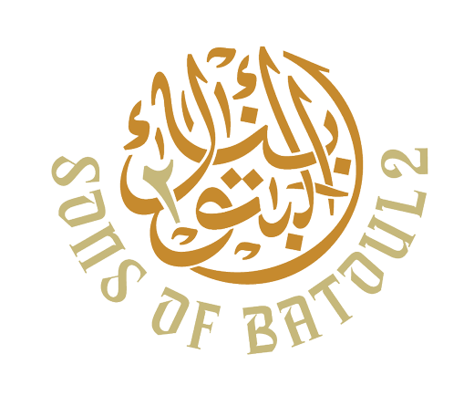

- Friday, Oct 23, 2026 · 8:00 pm
- Taha Foundation Community Center, 7506 Inkster Rd, Dearborn Heights, MI 48127
- Open for brothers & sisters · Food served in honor of Sayeda Fatima (a)
موكب صاحب الزمان (عج)
Serving Ahl al‑Bayt, one night at a time.
A Shia community in Dearborn and the Detroit area. Majalis, original latmiyat, the Madheef and programs through the year, run by volunteers.
Original latmiyat
Every release is an original Mawkeb production. Play it here, or find them all on our YouTube channel.
Our programs on the map
Pick a program, or follow the whole road from 1445 to today. All programs
Abna Al‑Batoul
1445The first year in our archive
A hall with the name of Allah on every tile of the wall, red headbands and black shirts. Latm in the round, and a majlis that brought the room to tears.
Abna Al‑Batoul

1446Sons of Batoul 2
A stage built as an arch, with the emblem at its crown and on the back of every shirt. A lecture, a majlis and latm under red light.
Abna Al‑Batoul
1447Sons of Batoul 3
A green stage, a full hall, and a latmiya produced as a reel with English subtitles.
- Saturday, November 1, 2025, at 8:30 PM
Tap to play with sound. 1 minute 23 seconds.
Kids Program
Kids ProgramThe Firmest Bond, ages 5 to 11
Lessons and hands‑on activities for children aged 5 to 11, run with The Ashura Project and the Taha Foundation.
- November 1, at 8:15 PM
- Taha Foundation Community Center, 7506 Inkster Rd, Dearborn Heights
- Registration online or in person at youth.ashuraproject.org
Fiqh Course
Fiqh CourseFor the month of Ramadan 1447
Practical rulings for the month of Ramadan, taught by Sheikh Abbas Ghaddar before the month began.
- Wednesday, February 4 and February 11, 2026, at 8:30 PM
- Islamic Council of America, 6941 Schaefer Rd, Dearborn
- Open to brothers and sisters
Laylat Al‑Qadr
The Best of Leaders 3Laylat al‑Qadr, Ramadan 1447
A lecture by Sheikh Abbas Ghaddar, Du'a al‑Jawshan al‑Kabir, and a latmiya commemorating the martyrdom of Imam Ali (a).
- Sunday, March 8, Tuesday, March 10, and Thursday, March 12, 2026, at 9:00 PM
- Taha Foundation Community Center, 7506 Inkster Rd, Dearborn Heights
Ashura
AshuraMuharram
Majalis and latmiya nights for Imam Husayn (a) in Muharram. The Mawkeb also runs campaigns with The Ashura Project.
More about The Ashura Project campaignsArbaeen
Arbaeen of Imam Husayn (a)Safar 1448
A lecture by Sheikh Ali Nazzal, a majlis with Br. Hussein Issa, and a latm majlis with Br. Ahmad Ayoub.
- Sunday, August 2, 2026, at 7:45 PM
- Taha Foundation Community Center, 7506 Inkster Rd, Dearborn Heights
- Brothers only
Madheef
Madheef Sahib Al‑ZamanEvery program night
The Mawkeb's kitchen and table. The Madheef team cooks and serves for everyone who attends, and anyone can sponsor a meal or bring food.
Sponsor a meal or cook with usAbna Al‑Batoul
1448Sons of Batoul 4, this year
Black and white roses across the backdrop, the emblem in gold. Khutbas, majalis and latm, photographed night by night.
Our programs
Through the year of Ahl al-Bayt (a). All programs
- Abna Al-Batoulأبناء البتولThe annual gathering for Lady Fatima al-Zahra (a): majalis, lectures, latm and a new latmiya each year.
- Layali Al-Qadrليالي القدرThe Nights of Qadr: a nightly program, a dua schedule, a kids program and meals for everyone.
- Madheef Sahib Al-Zamanمضيف صاحب الزمانThe Mawkeb's kitchen and table. Every program night, the Madheef cooks and serves for all who come.
- ArbaeenالأربعينThe Mawkeb's Arbaeen services and activities.
- Year-round activitiesMawalid, wafiyat, Usul ad-Din lessons, community activities and The Ashura Project.
Support the Mawkeb
Your gift covers the food, the halls, the speakers and the recordings behind every night. May Allah (swt) accept it from you.
Zelle
mawkebsahebalzaman@gmail.com
Other ways to give · Volunteer with a team · Become a member
Where we gather
Programs move between three halls. The location is announced on Instagram before each night.